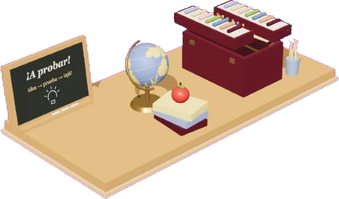

La caja de herramientas.
Recursos que preparé para explicar, experimentar y volver a preguntar. Nacieron para mis clases y aquí puedes abrirlos a tu ritmo.

Lo que hay en mi caja
Las hice yo, una por una, para mis clases. Todas son gratis y funcionan en el navegador.
Datrio Studio
Mi editor para diseñar el layout de un reporte antes de abrir Power BI: fondos, paletas desde imágenes y temas listos para exportar.
Editor de layouts ↗Generador de paletas
Lo armé porque elegir colores era la parte más lenta. Bloqueas los tonos que te gustan y el resto se acomoda.
Laboratorio de color ↗De datos a decisiones
Mi guía para pasar de una pregunta de negocio a un modelo, con prompts para trabajar con IA sin programar.
Guía interactiva ↗Guía de visualizaciones
La que reparto en clase: qué visual usar, con qué campos y cuándo no usarlo.
Guía de clase ↗Mega guía de DAX
Mi catálogo de DAX: funciones, contexto de filtro y recetas que uso de verdad.
Catálogo interactivo ↗La caja seguirá creciendo a medida que prepare nuevas herramientas para mis estudiantes.